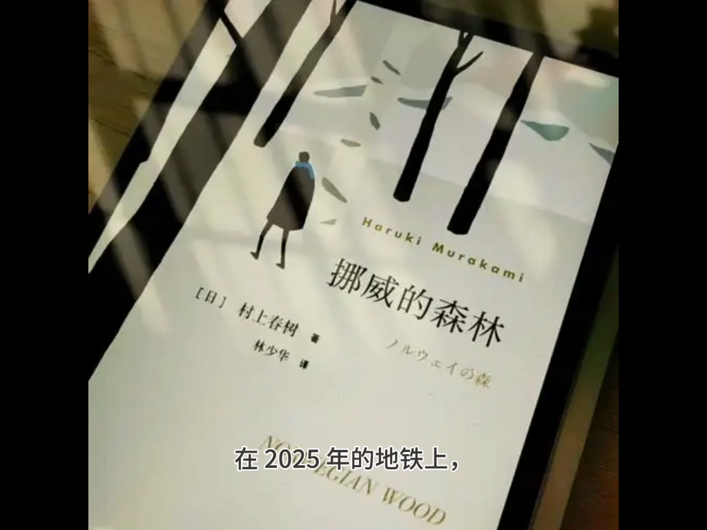

孤独与疏离
主人公大多是独居的男人：煮面、熨衬衫、听唱片、接电话。他不解释自己的孤独，只是一直在做这些事。 孤独因此不是情绪，而是一种生活方式，甚至是一门手艺——把一个人的日子过出秩序，本身就是抵抗。 他的小说很少让孤独的人求救，只让他们把水烧开、把面下锅。
他的小说有自己的一套道具：井通向过去，猫负责说真话，影子代表被丢掉的那部分自己。 下面六个母题、四种写法，是理解这套道具的说明书——先认识零件，再看它们怎么装起来。
母题不是主题，是道具：它们在各本书里换名字、换形状，但承担同样的功能。认出它们，就能预判下一步会发生什么。
主人公大多是独居的男人：煮面、熨衬衫、听唱片、接电话。他不解释自己的孤独，只是一直在做这些事。 孤独因此不是情绪，而是一种生活方式，甚至是一门手艺——把一个人的日子过出秩序，本身就是抵抗。 他的小说很少让孤独的人求救，只让他们把水烧开、把面下锅。
死去的人、消失的恋人、忘掉的段落。几乎所有小说的起点都是一次"少了一个人"， 叙述者花整本书的时间去处理那个空出来的位置。他不写哀悼的仪式，只写之后的日常： 谁替他收信，谁还在等一个不会来的电话。记忆因此有两面——它是证据，也是负担。
高墙围住的城、井底的黑暗、有两个月亮的年份。这些地方从不解释来历，只负责提供一条"出去"的路—— 并且往往回不来。它们不是乌托邦也不是地狱，更像"自我"的仓库： 人在里面交出影子、交出名字，换一种活法。
诺门坎、满洲、南京、地铁沙林、邪教团体。他坚持把国家层面的暴力写进个人的伤口里： 历史不是背景，是某个具体的人身上的疼。所以在他的小说里，战争往往先是一张照片、一把刀、一段听来的话， 然后才变成一个人的失眠。
跑步、游泳、做饭、做爱、喝酒。他用极具体的身体动作，把飘着的故事拽回地面： 煮一锅面要多少水，熨一件衬衫从领子开始。这大概也是他每天十公里、四点起床的原因—— 身体先站稳，故事才有地方发生。
爵士酒吧、古典乐唱片、披头士的旧歌。音乐在他的小说里不只是氛围，常常是叙事的开关： 一首歌响起，回忆就开始；一首歌放完，一个人就决定离开。他自己开过七年酒吧、后来又做过电台节目， 这些歌单最后都进了小说。
母题决定写什么，写法决定怎么说。这四条是他最稳定的手艺，几乎每本书都用得到。
多数作品用第一人称，语气平缓、带一点自嘲，几乎不抒情。叙述者常常比自己写的角色更冷静—— 怪事发生时，他先看表、再倒酒，然后才承认这件事不对劲。 这种语气让读者相信他，也让超现实显得理所当然。
会说话的猫、从画里走出来的人、突然多出来的月亮。他的处理方式是不惊讶： 主人公看一眼，耸耸肩，继续做饭。规则从不解释，但一定自洽—— 猫知道自己该说什么，画里的人知道自己为什么来。
《世界尽头与冷酷仙境》的两条线从不交汇，《海边的卡夫卡》的两条线最终相交。 并置本身就是意义：一个人有两个自己，两个都在找同一个东西。 读到后面才会发现，两条线不是两个故事，是一个人的两份病历。
同一首歌、同一口井、同一句台词在不同书里反复出现，像爵士乐的主题与即兴。 四十多年，他其实一直在写同一首曲子：一个男人、一间房、一个消失的人、一段要走的路。 变的是编配，不变的是那个调子。
下面这条视频把《挪威的森林》里的东西当成符号逐个拆开看， 它讲的正是这一页的六个母题，只是换成了别人的口音。点封面即跳转 B 站。

B 站 3:15三分钟，把书里的物件当成符号逐个拆：敢死队是麻木社畜的缩影， 直子害怕的东西、那口井、那首歌，各自指向什么。它讲的正是这一页的六个母题，只是换成别人的口音。
B 站 · 2025-06 · 3 分 15 秒 · 点封面或 在 B 站打开 ↗
从一个被反复引用的句子出发，聊他笔下那种常被称作"温柔"的爱情观。 和这一页的"孤独与疏离"放在一起看，会有另一种理解。
B 站 · 2025-10 · 作品解读影子还是本体，都是"我"——这条视频把《世界尽头与冷酷仙境》的"另一个世界"母题， 接到了他晚年的长篇上。
B 站 · 2025-07 · 作品解读延伸阅读（站外文章）： 中国作家网《失去他者的孤独》 · B 站专栏《论村上春树短篇小说的主题》
这些母题在具体作品里长什么样？见 代表作精读。